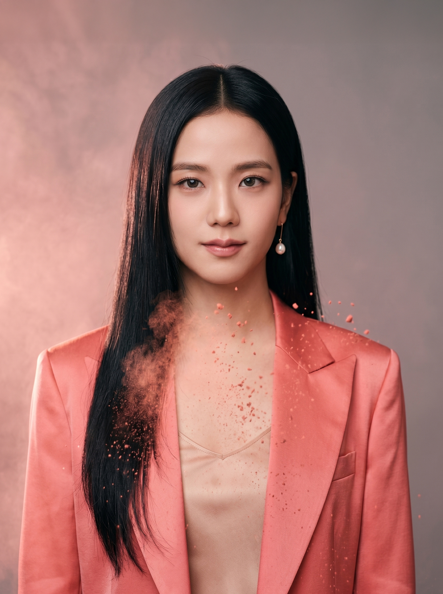
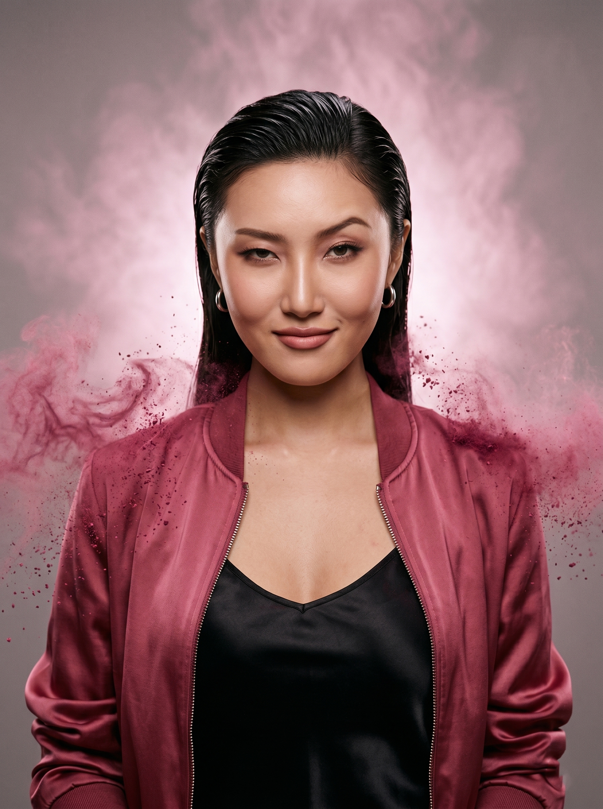
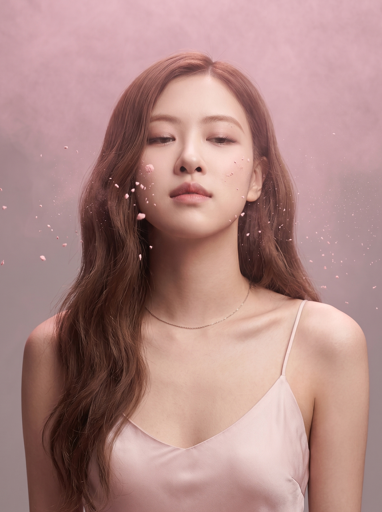
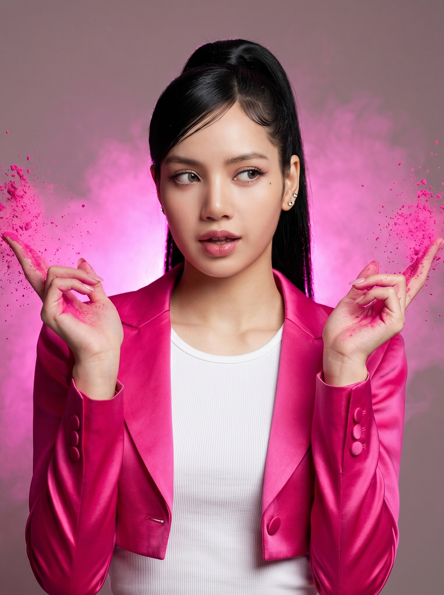
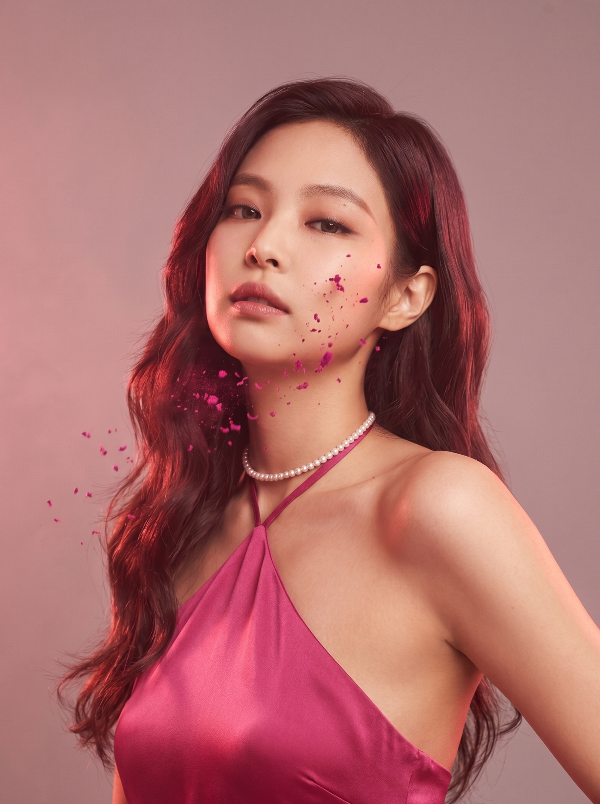

Чотири учасниці, чотири Pantone-координати рожевого. Від холодного Soft Pink лідерки JISUE до гарячого Hot Pink найменшої LIZAH — кожна закріплена за своєю H°-позначкою в спектрі. Нова реперка HWAZA розширила палітру до Warm Rose, а JENIE залишається частиною архіву як перша пам'ять про сольну еру.

Лідерка з грудня 2025-го. Її вокальний тон — теплий, з лагідним хрипом у нижньому регістрі: саме JISUE тримає ядро балад та веде перші припіви. У спектрі групи вона — м'який, «домашній» рожевий, до якого завжди повертається камера.

Ім'я 화자 буквально означає «та, що говорить». Приєдналася в лютому 2026-го, дебютує з синглом ABSOLUTE ZERO. У чат-шоу її першою рекомендацією було: «Якщо не впевнена — римуй холодом». HWAZA закриває дірку на позиції репера, яка залишалася відкритою після сольної ери JENIE.

Обличчя трьох домів одночасно — рідкісний випадок у поколінні. ROZAY тримає найсвітлішу точку спектра: її рожевий — прозорий, майже альбуминовий, читається як «саша вранці». Вокально відповідає за верхні лінії та ад-ліби в мостах.

Наймолодша (18). Хореографія PINK VENOM² — її. У 2025-му виграла Street Woman Fighter у складі соло-кру NOIR; повернулася в BLAC PINC як головна данс-архітекторка. У спектрі — найгарячіша точка, пряма H 330°: максимум сатурації.

Перша реперка BLAC PINC. Пішла в сольну кар'єру у грудні 2025-го після туру CROWN OF ROSE — офіційно «щоб зосередитись на лейблі OTM» та світовій платіжці з Chanel. У групі її колір був #FF3A88 · Crown Pink, який офіційно виведений з ротації і залишений як архівний.